Mijn projecten
Pollutionparty
Pollution party was een groepsopdracht waarbij wij al onze kwaliteiten moesten gaan combineren en daar een fysiek product mee maken. Pollution party is uiteindelijk een kaarspel geworden waarbij mensen bewust worden gemaakt van vervuiling. Daarbij was het ook de bedoeling om een bepaalde waarde aan toe te voegen en in dit geval was dit voornamelijk ecologische waarde.
Werking van het spel: Het werkt als kwartet, maar heb een hele reeks aan vervuilende sets en schoonmaak sets. Deze staat complementair aan bepaalde onderwerpen. Elke set heeft zijn eigen plus of min punten, waardoor je de ander een set kan geven die vervuilend is en zij minpunten krijgen. Processss.......